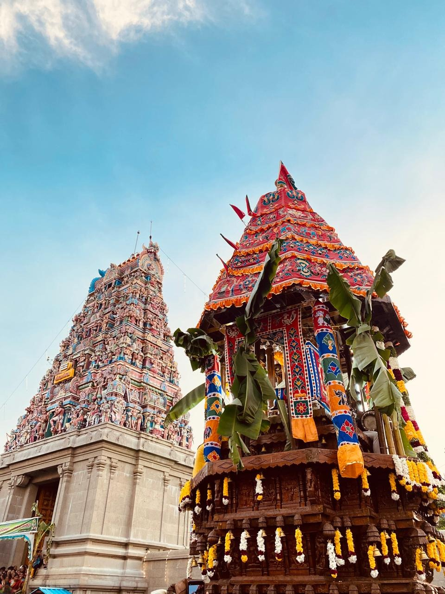

VILATHIKULAM
MEENAKSHIAMMAN TEMPLE

The Meenakshi Amman Temple in Vilathikulam, Thoothukudi District, Tamil Nadu, is a historic and sacred temple dedicated to Goddess Meenakshi and Lord Sundareswarar. The name “Vilathikulam” is said to have come from a pond (kulam) near the temple that had “Vila” and “Athi” trees beside it. This temple is the main spiritual center of the town and plays a key role in its cultural life.
Every year, the temple hosts the grand Chithirai Festival, celebrated for around ten days with rituals, music, and a colorful temple car (ther) procession that draws large crowds from nearby villages. It symbolizes unity, devotion, and tradition among the people.
Though smaller than the famous Madurai Meenakshi Temple, the Vilathikulam Meenakshi Amman Temple holds great local importance for its religious significance, community bond, and historical connection to the origin and identity of Vilathikulam.